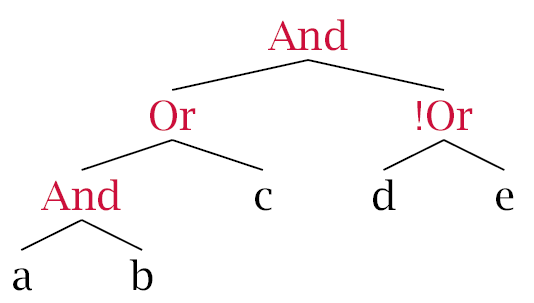
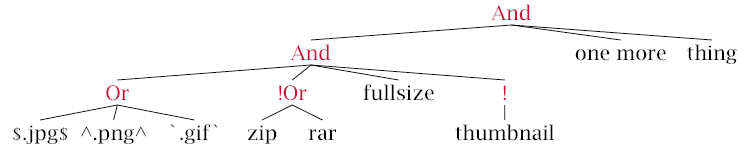

Description
QFilter allows users to "filter" items using logical expressions.
Description
An expression:
a and b or c and not (d or e)
will produce the following tree:
Sample evaluations:
- a
- False. Because 'b' is required.
- ab
- True. Both 'a' and 'b' are present.
- abc
- True. Both 'a' and 'b' are present and 'c' is allowed.
- c
- True. Both 'a' and 'b' OR just 'c' is allowed.
- abcd
- False. 'd' is not allowed.
- abce
- False. 'e' is not allowed.
- abcde
- False. Neither 'd' nor 'e' are allowed.
- wxyz
- False. No matching criteria.
A more complex statement like:
($.jpg or ^.png or `.gif` and !(zip|rar) and fullsize and !(thumbnail)) and "one more" and ("thing")
will produce the following tree:
Match Operators
- $
- Specifies to match the end of the string.
- ^
- Specifies to match the beginning of the string.
- `
- Specifies to treat keyword as a regex.
Logical Operators
- and,&
- Logical and.
- or,|
- Logical or
- not,!
- Not operator. Can only appear in front of a group
Keywords and Groups
- keyword
- Any sequence of letters that are not an operator
- "a keyword"
- If the keyword contains a space or an operator, enclose it in double quotes. For example, to search for the string 'and' enter "and".
- (...)
- A group. Allows users to override operator predence. Also allows negation. For example, !(zip|rar) will match any string that does not contain the words zip or rar.
Note: All operators are case-sensitive. However, the default string comarison method is case-insensitive.
Resources
The grammar for QFilter can be found in the file QFilter.tpg in the Resources\QFilter folder in the source directory.